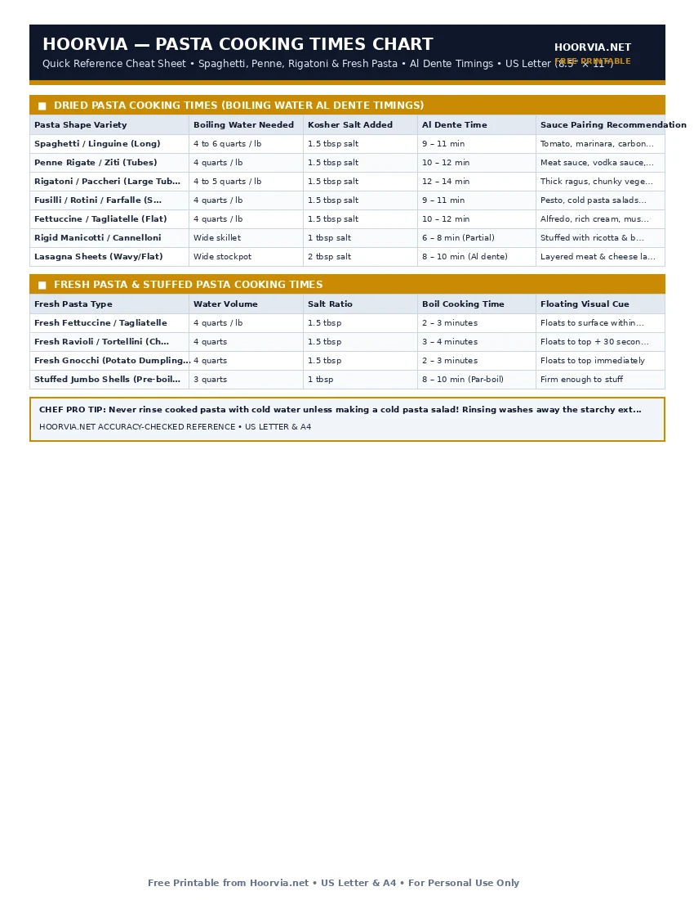

Pasta Cooking Times & Water Salt Ratio Chart (Al Dente)
Perfect Italian pasta is cooked *al dente* ('to the tooth')—firm in the center with a slight resistance when bitten. Overcooking pasta releases excess starch into the sauce, making it pasty. Use this master boiling matrix for dried and fresh pasta shapes.
| Pasta Shape Variety | Boiling Water Needed | Kosher Salt Added | Al Dente Time | Sauce Pairing Recommendation |
|---|---|---|---|---|
| Spaghetti / Linguine (Long) | 4 to 6 quarts / lb | 1.5 tbsp salt | 9 – 11 min | Tomato, marinara, carbonara, oil & garlic |
| Penne Rigate / Ziti (Tubes) | 4 quarts / lb | 1.5 tbsp salt | 10 – 12 min | Meat sauce, vodka sauce, baked bakes |
| Rigatoni / Paccheri (Large Tubes) | 4 to 5 quarts / lb | 1.5 tbsp salt | 12 – 14 min | Thick ragus, chunky vegetable sauces |
| Fusilli / Rotini / Farfalle (Shapes) | 4 quarts / lb | 1.5 tbsp salt | 9 – 11 min | Pesto, cold pasta salads, cream sauces |
| Fettuccine / Tagliatelle (Flat) | 4 quarts / lb | 1.5 tbsp salt | 10 – 12 min | Alfredo, rich cream, mushroom ragu |
| Rigid Manicotti / Cannelloni | Wide skillet | 1 tbsp salt | 6 – 8 min (Partial) | Stuffed with ricotta & baked |
| Lasagna Sheets (Wavy/Flat) | Wide stockpot | 2 tbsp salt | 8 – 10 min (Al dente) | Layered meat & cheese lasagna |
| Fresh Pasta Type | Water Volume | Salt Ratio | Boil Cooking Time | Floating Visual Cue |
|---|---|---|---|---|
| Fresh Fettuccine / Tagliatelle | 4 quarts / lb | 1.5 tbsp | 2 – 3 minutes | Floats to surface within 90 seconds |
| Fresh Ravioli / Tortellini (Cheese) | 4 quarts | 1.5 tbsp | 3 – 4 minutes | Floats to top + 30 seconds |
| Fresh Gnocchi (Potato Dumplings) | 4 quarts | 1.5 tbsp | 2 – 3 minutes | Floats to top immediately |
| Stuffed Jumbo Shells (Pre-boiled) | 3 quarts | 1 tbsp | 8 – 10 min (Par-boil) | Firm enough to stuff |
Printable Cheat Sheet Preview (US Letter & A4)
High-contrast, ink-saving layout designed for kitchen binders and pantry doors. No sign-up required.

The Golden 1-10-100 Pasta Salt Rule
Italian chefs follow a strict mathematical rule for boiling pasta without measuring cups:
- 1 Liter of Water
- 10 Grams of Kosher Salt (about 1.5 teaspoons)
- 100 Grams of Dry Pasta
Salting your boiling water adequately (it should taste pleasantly seasoned like seawater, roughly 2% salinity) is your only chance to season the interior of the noodle itself.
Frequently Asked Questions
Should I add olive oil to the boiling pasta water?
Never! Adding oil to boiling water makes the noodles slippery, which prevents your sauce from clinging to the surface. Just stir the pasta vigorously during the first 60 seconds so noodles don't stick to the pot bottom.
Why do I need to save a cup of starchy pasta water before draining?
Starchy pasta water is liquid gold. Adding 2 tablespoons of cloudy pasta water to your pan sauce while tossing the noodles emulsifies the butter, cheese, and oil into a glossy, velvety restaurant coating.